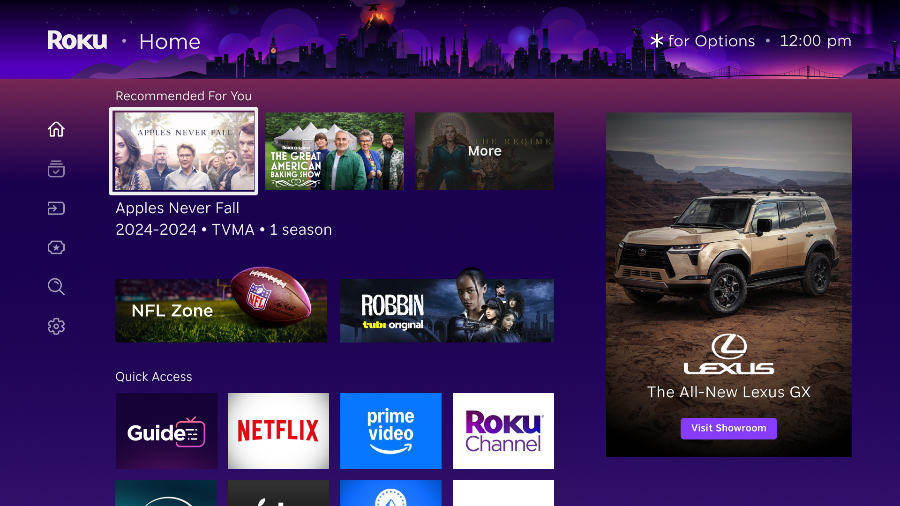

Roku
Roku is a streaming platform operating across hardware and software, serving millions of users across North America, LATAM, APAC, and Europe.
Overview
Joined as lead designer for international markets, and expanded scope to lead initiatives across Live TV, Settings and Privacy, Homescreen Redesign, and Search.
Led international expansion across LATAM, APAC, and Europe, working cross-functionally with engineering, legal, and regional stakeholders to ship localized experiences including audio tracks, subtitles, channel scan, and market-specific onboarding flows.
Tools
For Product Design and Design System
Insights from Users
Roku's Home Screen is very important for our users: Home Screen Sentiment is one of the best predictors of CSAT, even better than Platform Streaming Hours or Account Tenure.
Based on the user's survey on perception: 77% Simplicity, 51% Helpfulness, 15% Delight.

A/B tests
In order to increase delight and helpfulness perception in the product, we ran a series of A/B tests that would break down specifics of our home screen, without changing its simplicity.
.gif)

Homescreen
Once we had insights from the tests, we iterated on a different paradigm that would address the new insights and business needs.
The new Homescreen is a balance of research, design evolution, product and business goals.
